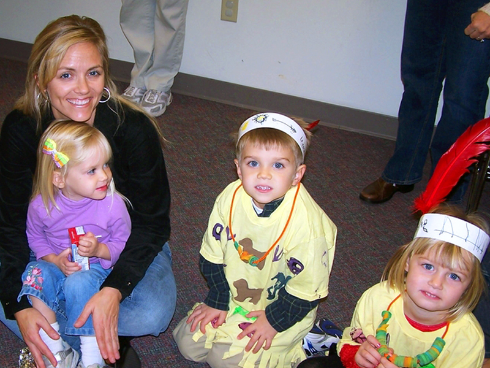
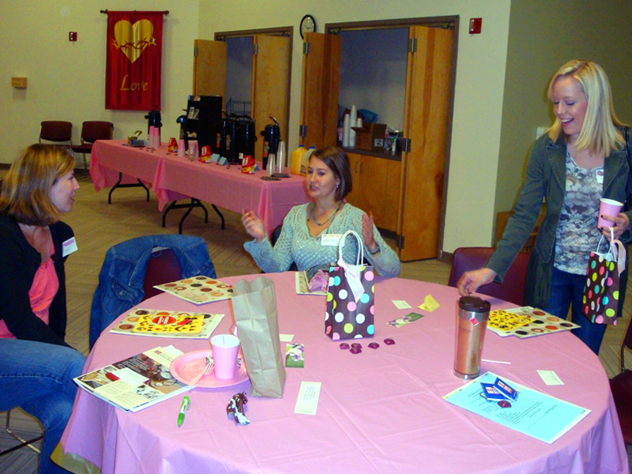
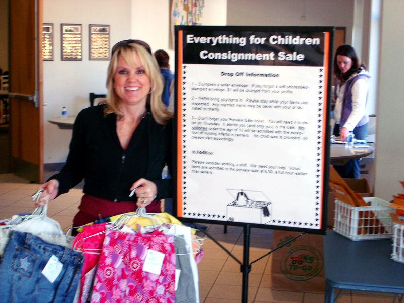
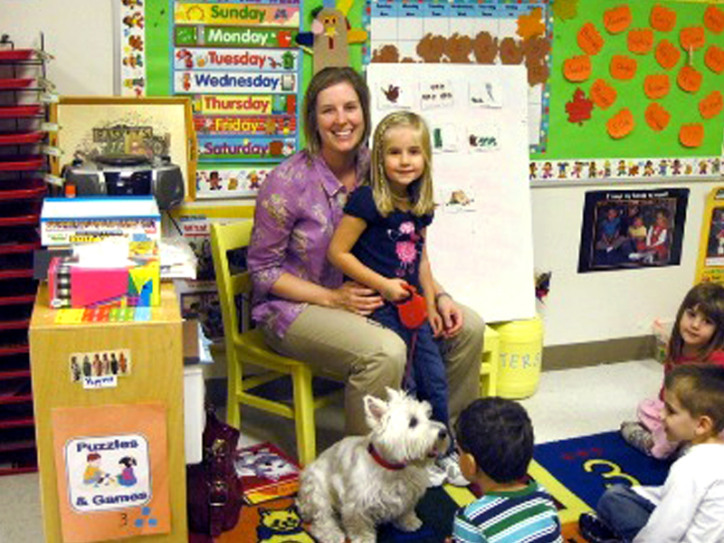
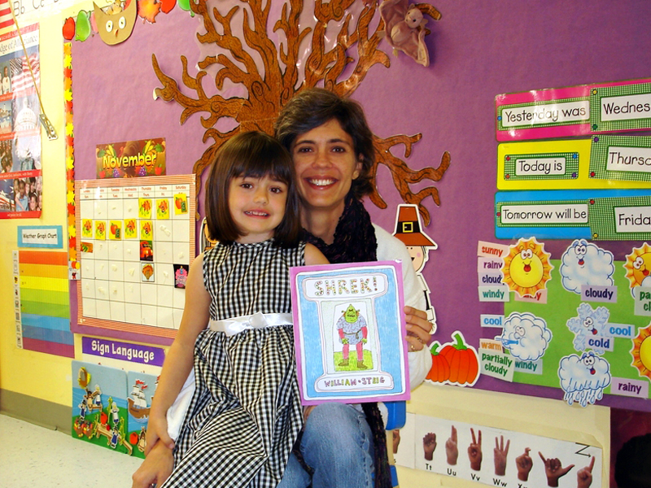

Parents
The Preschool at St. Andrew communicates regularly with parents.
- Each month, parents receive a calendar listing the themes for class activities and important dates. Parents receive frequent notes from teachers and a monthly school newsletter. Teachers frequently use email to stay in touch.
- Student goals are shared with parents. A mid-year conference reviews the progress that the child has made in mastering the goals and objectives on our Progress Reports and gives suggestions for the classes for the next school year.
- Parents are always welcome. They are requested to help with at least 1 party during the year. Class parties become a good time for parents to visit with each other and get to know other children in the class.
- Some participate as a ‘mystery reader’ or in other volunteer activities. Parents of 3’s and 4’s provide transportation on field trips. Parents are invited to share their hobbies, interests, and cultural traditions if they are inclined.
- We conduct some fundraising activities but they are optional. They include using Publix cards and collecting ‘Box Tops for Education’.
- A pre-enrollment tour is available to parents. Prospective parents may view classes and meet teachers and see if St. Andrew is the best choice for their child.
- Parents are invited to a Parent Open House and Student/Parent Open House before school starts. The open house dates are August 13th and 14th.
- A Parent Survey is conducted each year to evaluate the program’s effectiveness. All parents are invited to participate.
- The Preschool Board guides the policies of the school. Board members serve three years and typically include preschool parents.
- Parents are invited to participate in a parent breakfast held in early fall. Parents get to know each other and learn about opportunities for young families at the church. Bible Studies and Parenting Workshops are available each year.
- Families receive a Parent Handbook each year that describes our procedures and contains contact information for other preschool families.




